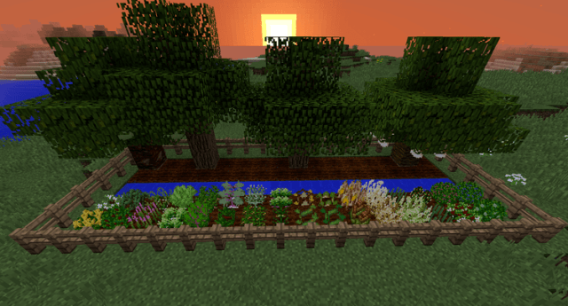
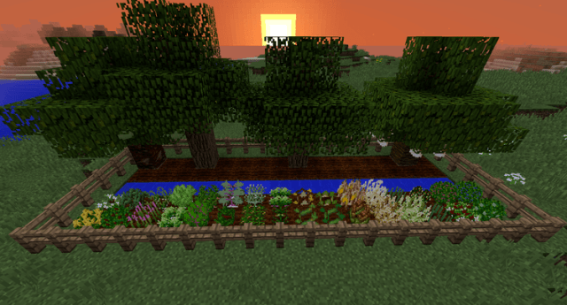

Ice and fire
Este mod trata de nada mas y nada menos de añadir mods o criatuas hostiles en tu mundo de Minecraft, como su nombre lo dice trata de Dragones de Fuego y Hielo, pero en las ultimas actualizaciones, han añadido un Dragon de Rayo, el cual espamea en el bioma de Jungla y tambien en el bioma de Savana, pero no solo eso, si no que tambien el mod, trae una gran variedad de criaturas para todos los biomas de Minecraft, tal como vez en las imagenes, tambien armaduras, herramientas, espadas, posiones y mucho mas, te recomiendo de verdad probar este grandioso mod.


ALex Mobs 1.16.5
Este fantastico mod, trae a nuestro mundo de Minecraft, una variedad de animales y criaturales, las cuales las encontraremos por todo el mundo, si es en el bosque podemos encontar un Oso, y si es en el oseano podemos encontar muchos animales del agua como las orcas y mucho mas, tambien cuenta con algunas posiones y este mod pasa en constante actualizacion asi que deben estar totalmente atentos.


MrCrayfish's Furniture

Este mod se encarga de traernos a nuestro mundo de Minecraft una buena cantidad de utensilios para decorar en nuestras casas, tales como movilaria, osea muebles, sillas etc, y tenemos utensilios para la coina, tales como una estufa, nevera y incluso tenemos una lavadora, y disponemos de una tv, por otra parte tambien el mod trae una parte de utensilio en todas las clases de madera, ademas que una luz la podemos controlar con tan solo un boton como si fuera en la vida real, asi que, que esperas para descargar este fantastico mod.
Explorecraft
Este mod se encarga de añadir algunas criaturas y hacer el juego totalmente distinto, para decirles la verdad este mod es muy ramdon, por lo cual trae variedad de items, pero este mod tambien cuenta con 3 biomas y en cada uno de ellos un material distinto para poder crear armaduras, herramientas y mucho mas, las criaturas no son tantas pero, algunas cuentan con estructuras, asi que les recomiendo este mod de verdad.


Fossils and Archeology Revival
Fossils and Archeology Revival es un mod muy genial que te permite volver a las eras prehistocias de la tierra, donde se centra de añadir criaturas de varias eras, ya sea la era de los dinosaurios, entonces se encarga de añadir una gran cantidad de itens y por supuesto criaturas que son de esa era como dinosaurios en todas sus especies etc, ya sean las eras eladas, se encarga de añadir criatuas como el mamut o distintas especies de trigre, en general todo lo que tiene que ver con estas especies.Estas criaturas no van a aparecer en tu mundo de Minecraft, asi que tendras que hacerlas con algunas maquinas que te ofrece este mod, pero si podras encontrar algunas ruinas donde claramente encontraras las bases como fossiles y todo eso.

Mowzie’s Mobs Mod

Mowzie's mods, te permitira tener en el tu Mundo de Minecraft, una variedad de criaturas en distintos biomas, seguramente en la portada de esto has visto un dios sol, bueno este es uno de los mobs que vas a estar encontrando por el mundo, este spamea en el bioma de savana, al igual que en el bioma de jungla puedes encontrar a una planta carnibora y en todas las partes del mundo en las cuevas a uno de los mobs mas interesantes de este mod, que es el guerrero de hierro que, el cual si lo matas te puedes ganar un ancha o incluso tambien su casco, tambien el mod ofrece algunas armaduras y herramientas, tambien te ofrece un bioma de una montaña de hielo, donde podras encontrar a un gigante de hielo y incluso aldeas de hielo con sus respectivos aldeanos, de verdad te lo recomiendo.


Kathairis
Kathairis mod, te permitira el gusto de viajar a una nueva dimension donde, encontrar nuevas crituras, y cosas muy hermosas.En esta nueva tierra, encontraremos nuevos muchos nuevos biomas y muchas nuevas criaturas, algunas hostiles, otras neutrales y otras pacíficas. Para realizar el portal a esta nueva dimensión tendremos que hacer un portal como el del Nether, solo que cambiaremos la obsidiana por piedra, pasada por el horno. Para encender el portal tendremos que crear un nuevo objeto en la mesa de crafteo, colocando cuatro perlas de Ender en las esquinas, un diamante en el centro y el resto llenarlo con lapislázuli.
Galeria Kathairis


Galactricraft mod

Galactricraft mod es un mod que sindudra te dejara sin palabras, porque tendras la posibilidad de ir a otros planetas de nuestro sistema solar, en un cohete con inumerables herramientas, nuevos ores, y muchas maquinas para ir al espacio esterior, este mod es un poco grande por lo cual necesitaras de 3 complementos mas incluyendo el pequeño addon para visitar otros planetas aparte de los del sistema solar, este mod consta con variedad de maquinas en la cual tendras que fabricar el cohete para viajar al espacio, tales como el cobre, aluminio, metal etc, los cohetes van por niveles, tendremos el de nivel 1 donde solo podemos ir a la Luna, ademas que podemos tener una base especial en la atmosfera de la tierra, luego sigue el cohete de nivel 2 donde podemos ir a Marte y pordefeto este ba mas rapido que el nivel 1, y por ultimo el de nivel 3 donde podemos ir a planetas mas lejanos, y tambien en el inventario tendremos nuea interfats para poder colocarnos los tanches de oxigeno etc.

Pam’s-HarvestCraft

Pam’s-HarvestCraft mod, te permitira tener una inmensa variedad de nuevas comidas y resetas para tu mundo de Minecraft, principalmente, apenas entres con el mod, te podras dar cuenta que abran nuevas plantas, pero en especial hay nuevos arboles con frutos, en cada bioma especifico, seguramente en el bosque lo primero que encontaras seran Manzanas, tambien podras encontrar arboles de Pera, Ubas, Mango, Naranja, todas las clases de frutas que conozcas, pero detente, que estas frutas, y algunas te curaran pero no del todo, para eso el mod te trae un enorme numero de resetas, que podras hacer, a lo que me refiero es que te traera muchas comidas y estas se crean con lo que vayas consiguiendo en el mundo, ademas que todo lo que encuentres los puedes plantar donde tu quieras, de verdad te recomiendo este mod!!.
 

Dynamic trees
Si no te gustan los arboles cuadrados de Minecraft, sin duda este mod va a hacer tu favorito, Dynamic trees es un mod en donde te permitira tenes arboles dimensionales en tu mundo de Minecraft, ademas que estos arboles tienen fisica, es decir estos arboles, ahora no los podras talar tan facilmente con la mano, necesitaras un hacha, ademas de eso estos nuevos arboles una vez los talas, estos se caen al sueño como si hubiera grevedad, por otro lado es muy recomendable usar optifine porque estos arboles te pueden dar un poco de lag, por su estetica.